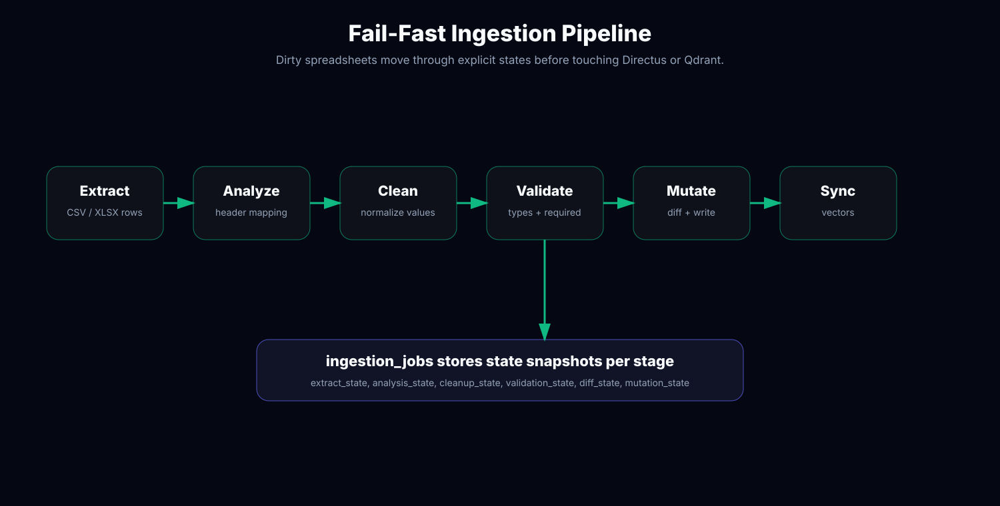
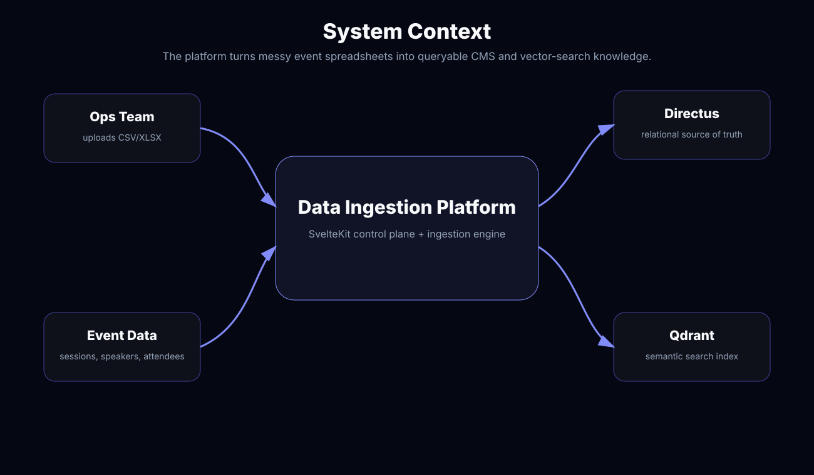
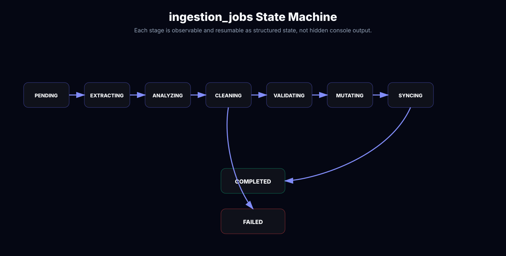
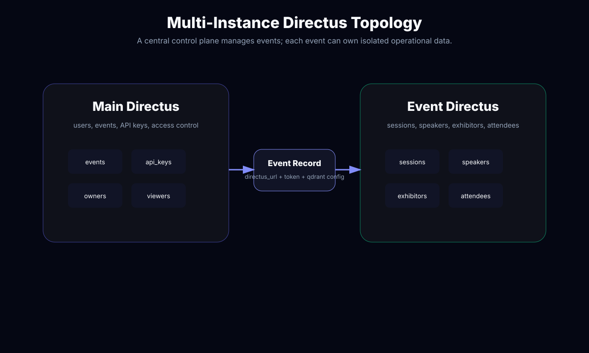
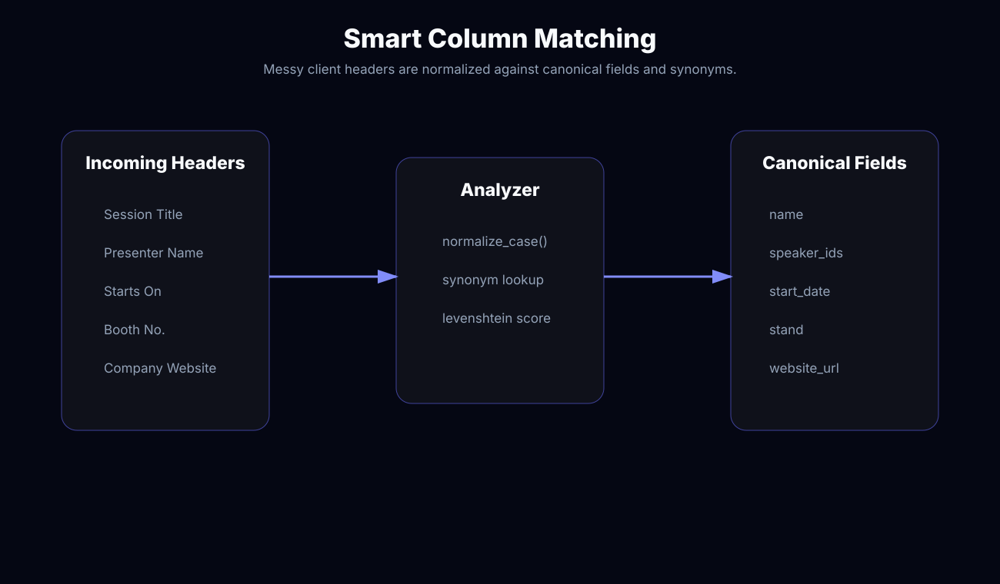
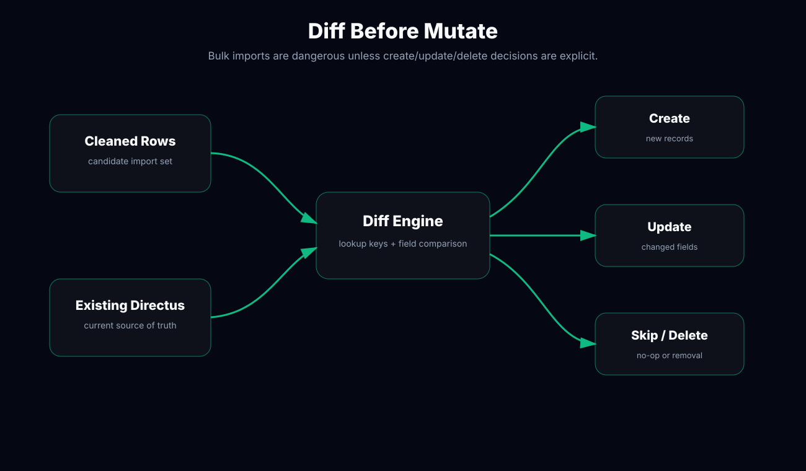
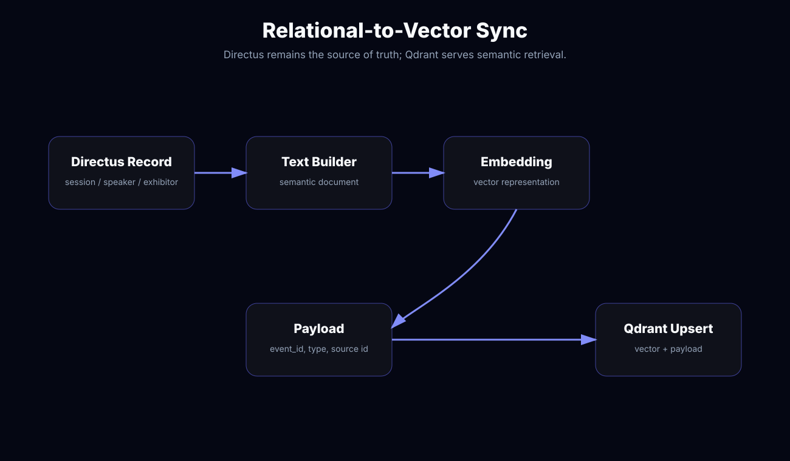
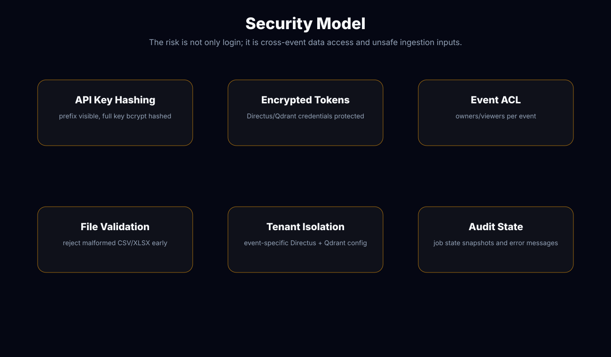
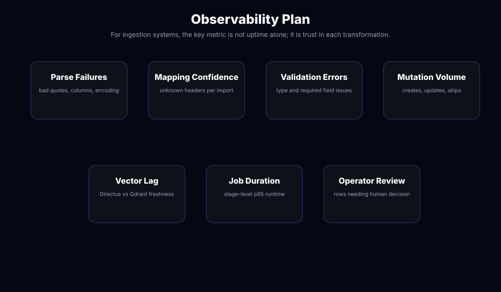
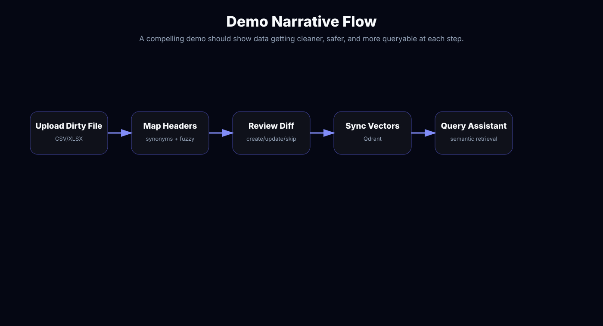

Operational Problem
Manual imports are slow and fragile. Operators need to upload hundreds or thousands of records without editing every row by hand.
Visual Hive needed a system that could ingest event data from CSV/XLSX files, map unpredictable client headers to a structured schema, clean and validate records, mutate Directus safely, and keep Qdrant synchronized for semantic search. The hard part was not uploading files. The hard part was preserving trust across every transformation.
Event platforms receive data from many operators, exhibitors, speakers, sponsors, and registration systems. The same concept can arrive as “Session Title”, “Event Name”, “Talk”, or “Title”. Dates can be strings, Excel serials, or inconsistent timezone formats. Speaker-session relationships may be embedded as comma-separated names instead of stable IDs.
Manual imports are slow and fragile. Operators need to upload hundreds or thousands of records without editing every row by hand.
CSV/XLSX files contain inconsistent headers, encodings, delimiters, empty rows, malformed quotes, missing required fields, and relationship fields that need lookup logic.
The AI assistant is only useful if Directus and Qdrant agree. If relational data and vector payloads drift, semantic retrieval becomes stale or misleading.
For ingestion systems, being fast is not enough. A fast bad import creates corrupted downstream analytics and hallucinated assistant answers.
| Decision | Why | Rejected Alternative | Trade-off |
|---|---|---|---|
| Explicit pipeline stages | Extract, analyze, clean, validate, mutate, and sync are separately inspectable. | One large upload function. | More code, but much easier debugging. |
| Fail-fast validation | Bad CSV/XLSX should be rejected before it mutates Directus. | Best-effort silent cleanup. | Operators must fix bad files, but trust is preserved. |
| Directus as source of truth | Operators need CMS control, relational data, permissions, and auditability. | Qdrant-first or JSON-only storage. | Vector sync becomes a second responsibility. |
| Qdrant as derived index | Semantic search needs payload-filtered vectors, but vectors should be rebuildable from Directus. | Store only embeddings without relational backing. | Requires freshness tracking and sync observability. |
| Multi-instance Directus | Main instance owns users/events; event instances isolate event-specific operational data. | Single global schema for all events. | More deployment complexity, better event isolation. |
Each upload becomes an `ingestion_jobs` record with status, progress, current stage, error message, and JSON snapshots for each pipeline state. This makes a failed import diagnosable instead of mysterious.



LF/CRLF line endings, comma/semicolon/tab delimiters, UTF-8 files, whitespace-only rows, trailing newlines, and malformed quote rejection.
First-sheet parsing, null cell normalization, formula results, header auto-detection, merged-cell behavior, and numeric values converted into strings for validation.
Unmatched quotes, inconsistent column counts, and structurally invalid files are rejected before cleanup or mutation begins.
The app separates platform-level concerns from event-level content. Main Directus stores events, users, API keys, and owner/viewer relations. Event Directus stores sessions, speakers, exhibitors, attendees, general info, supports, conversations, messages, traces, top questions, and ingestion jobs.

The ingestion system cannot require every client to use perfect internal field names. The analyzer maps headers to canonical fields through normalization, synonyms, and fuzzy matching. This is where automation creates leverage without giving up control.

Manual mapping works for one import but collapses when operators repeat the same job across many events. Synonyms encode institutional memory so repeated imports get faster.
Header confidence should influence workflow. Ambiguous mappings should be surfaced to operators instead of silently corrupting canonical fields.
The mutation layer compares cleaned rows with existing Directus data, calculates creates/updates/skips/deletes, and then applies changes. This makes bulk import behavior visible and avoids accidental overwrites.

After Directus mutation, records are converted into semantic documents and upserted into Qdrant with payload metadata. This allows the assistant to retrieve event-specific knowledge while keeping Directus authoritative.

semantic_document = collection_type + title + description + structured_fields
qdrant_payload = { event_id, collection, source_id, updated_at, directus_url }
vector_freshness = directus.updated_at <= qdrant.payload.updated_at
This product handles external files, API keys, Directus tokens, Qdrant credentials, and event-level authorization. That means security is not a final layer; it shapes the data model.

A generic uptime dashboard does not answer whether imports are reliable. The useful metrics are parse failures, mapping confidence, validation errors, mutation volume, vector lag, job duration, and operator review load.

POST /api/events/:eventId/ingestion/jobs
Content-Type: multipart/form-data
file: sessions.xlsx
collection: sessions
202 Accepted
{
"job_id": "job_01J...",
"status": "PENDING",
"progress": 0,
"current_stage": "Queued for extraction"
}
GET /api/events/:eventId/ingestion/jobs/:jobId
200 OK
{
"status": "VALIDATING",
"progress": 62,
"current_stage": "Checking required fields and relationship references",
"validation_state": {
"valid_rows": 486,
"invalid_rows": 14,
"errors": ["row 52: missing duration"]
}
}Replace the placeholders with Playwright captures from `/home/ikniz/Work/Coding/SvelteKit/data-ingestion`: upload screen, mapping review, validation result, Directus diff, Qdrant sync, and dashboard analytics.


Separating pipeline stages made the system explainable. Directus stayed authoritative, Qdrant remained rebuildable, and operators could reason about import failures instead of guessing from logs.
The next iteration should add a richer mapping confidence UI, per-stage duration charts, import rollback snapshots, and vector freshness alerts for stale Qdrant payloads.
I design ingestion systems that preserve correctness before they automate everything.
Send me your data bottleneck mythonggg@gmail.com